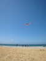
Fécamp, on attend ce festival sympathique avec impatience. J'arrive vendredi après-midi, Néné, bien sûr, et les Anglais sont déjà là. Ils font voler... un drapeau anglais en forme de coussin...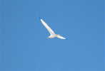
Le temps est splendide, le vent est solide : 38 km/h constants, des pointes à 45 ! Je sors Albatros 2 dont je viens de changer les cannes, il résistera bien, mais tendu à fond... Pas trop de risques d'accrochage aujourd'hui, mais je ne monte pas trop haut quand même...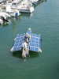
La grue met des bateaux à l'eau dans le port pour la circonstance. Ici le Défi Solaire, bardé de panneaux du même nom, qui doit faire la traversée de la Manche...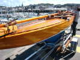
Par la route arrive aussi ce très beau quillard à voile, en bois verni, de dimensions minimes, à peu près de la taille d'un gros dériveur...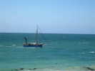
Les sorties en mer au profit des badauds ont commencé, avec le bateau de la SNSM (les sauveteurs en mer) ou d'autres...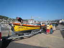
Sur d'interminables remorques arrivent aussi les yoles de Bantry. Pourvues d'une dizaine de rames, celles-ci, à la différence des yoles australiennes, sont aussi dotées de petites voiles et d'une barre au lieu de l'aviron arrière... Détails sur http://speredarmor.blogspot.com/ ...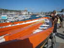
Les mats et les rames sont couchés à l'intérieur. Les rames servent de bancs quand on navigue à la voile !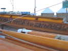
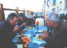
C'est l'anniversaire de Néné, il invite quelques cervolistes proches au restaurant Kebab. Avec François, nous suivons le mouvement, c'est très bon, on ne le regrettera pas...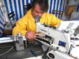
Autour du port, plein de stands. Dans celui-ci, on coud la corde qui se trouve en haut des filets : un baquet plein de filets à gauche, la corde qui passe devant dans un tube de guidage et une machine avec une aiguille grosse comme un clou qui fait 10 points à la seconde à travers le total...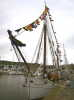
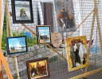
De l'autre côté du bassin, les peintres, dont certains sont intéressants comme celui-ci !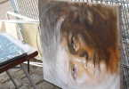
Ou cet autre, qui n'a pas terminé son installation mais promet beaucoup !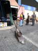
Plus loin un émule de Joël a créé un chemin de billes... On les met dans l'entonnoir en haut et elles descendent par les tubes et les cornières jusque dans la bassine en bas... Le tout n'est pas très transportable quand même !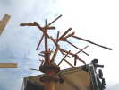
Un sculpteur a aussi créé cette oeuvre en bois flottés, de 5 m de haut...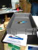
Un stand de vulgarisation expose plein de trucs surprenants, comme ce bateau pop-pop qui navigue avec une propulsion par bougie...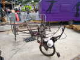
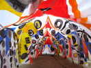
Mais à quoi sert cette grande tente très décorée ?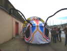
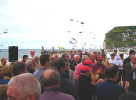
Samedi midi, apéritif général de la municipalité, sur la terrasse du Musée maritime... Tous les participants y sont mêlés...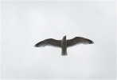
Les goélands surveillent cet intéressant événement qui devrait laisser des miettes, en profitant du remous de la façade...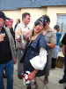
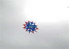
Sur la plage, on a failli avoir quelques gouttes de pluie, mais le beau temps est revenu. Joël a sorti son Revolver, qui tourne lentement sur lui-même !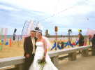
Des mariés profitent de l'occasion et se font photographier devant les cerfs-volants et les J... du Vent...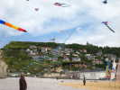
Plusieurs arches se dresseront tout au long des deux journées, sur les galets de la plage de Fécamp, devant la falaise et ses belles maisons !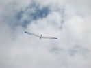
Encore pas mal de vent, je sors Albatros 1, le plus vieux. J'ai quand même changé la toile et les cannes, mais il est entièrement d'origine...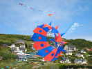
En bas, un bol à pointes, surchargé d'un Spiderman, décolle bien, devant l'arche...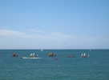
Les yoles sont sorties, elles n'ont pas besoin d'attendre marée haute ! Les voiles sont montées, et avec le vent de mer, les rameurs n'auront pas trop de boulot à faire pour tirer des bords !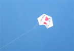
Fécamp Atout Vent a sorti le Rokkaku Le Coeur des Anges, réalisé pour une association qui parraine des greffes d'organes...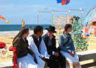
Les représentants d'une troupe, des Hongrois sans doute, font une petite pause devant les cerfs-volants et les JdVs avant de se produire !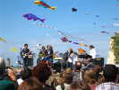
Beaucoup d'orchestres nous réjouiront, dans le barnum pour l'inauguration ou pour le dîner, dans les stands et ici sur la plage !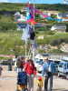
Evidemment, avec le vent de mer, les réverbères arrêtent quelques cerfs-volants... Thierry a une échelle télescopique, mais ça ne suffira pas !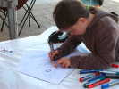
Un atelier pour enfants, bien sûr... Nous ferons voler aussi des handicapés pour lesquels ont été construits des Fantômes...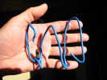
Vent régulier et stable, je sors ma nacelle photo ! Repliée, elle tient dans la poche. Dépliée, on accroche l'appareil à gauche, on enroule la ligne à droite et on monte... Un logiciel CHDK pour les Canon permet de programmer une prise de vue toutes les 10 secondes. Au retour à la maison, on triera, mais ça ne fait pas une masse démentielle de photos : 90 pour 15 mn... et j'ai une carte SD 2 Go !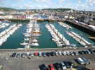
Bien sûr, ça marche ! Et, plus courte que l'ancienne, elle balance pourtant plutôt moins ! Voilà le résultat, sur les bassins du port et la ville...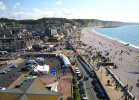
Sur la plage à gauche, des galets et des falaises jusqu'à la Manneporte d'Etretat et beaucoup de promeneurs...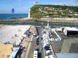
A droite, le parking des campings-cars des cervolistes, des arches, des cerfs-volants, le chenal de sortie du port et toujours... la falaise, avec en haut le sémaphore et la Chapelle Notre-Dame du Salut !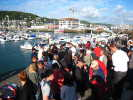
Samedi soir, dîner de fête général. On nous a dit 7 h, mais quand on arrive, c'est : pas avant 8 h ! Certains retournent pour l'apéro (mais reviendront à temps), les autres attendent en discutant !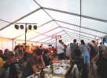
Tres bien la soirée, cette année, paella ou hareng saur, et un bon orchestre qui mettra du rythme et de l'animation !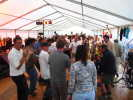
Tout le monde (les cervolistes surtout...) sera sur la piste à danser et à taper dans les mains en chantant !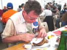
Le Prèz est reparti prendre des forces, ayant trouvé un deuxième hareng !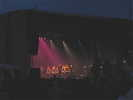
Sous l'énorme tente dressée sur le parking du club nautique, musique et danse irlandaise... Les 5 musiciens ont bien du mal à meubler le fond de la grotte, mais la sono est très bonne. Les danses irlandaises, c'est : haut du corps droit et immobile, et jambes qui tricotent à une vitesse folle, plutôt danse de claquettes que folklore...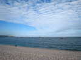
Dimanche matin, sortie de tous les bateaux pour la Bénédiction rituelle ! Avec le vent de mer, nous ne pourrons pas voler au-dessus...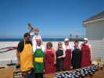
A midi, le déjeuner des cervolistes se prépare ! De nouveaux membres reçoivent le tablier d'honneur des cuistots, à leur nom !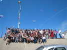
Tout le monde pose pour la photo-souvenir sur le bord du talus que j'ai bien escaladé 50 fois dans le week-end !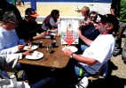
Pour finir, on déjeune sur la promenade, pour profiter du beau temps ! Très bon repas, et pâtisseries de ces dames, plusieurs parts si on insiste !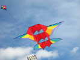
Ensuite, premier vol pour le nouveau cerf-volant de Patrick, un Miège, dont la barre principale est en canne à pêche, l'Albatros fait des émules... Premier vol réussi, Patrick est heureux comme tout, il sera même sur le podium du concours de création.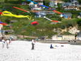
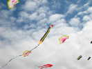
Voilà le premier prix, des Rokkakus avec des cochons rose !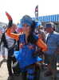
Sur la promenade passent trois êtres étranges issus d'un feuilleton galactique, avec des tentacules dans le dos !